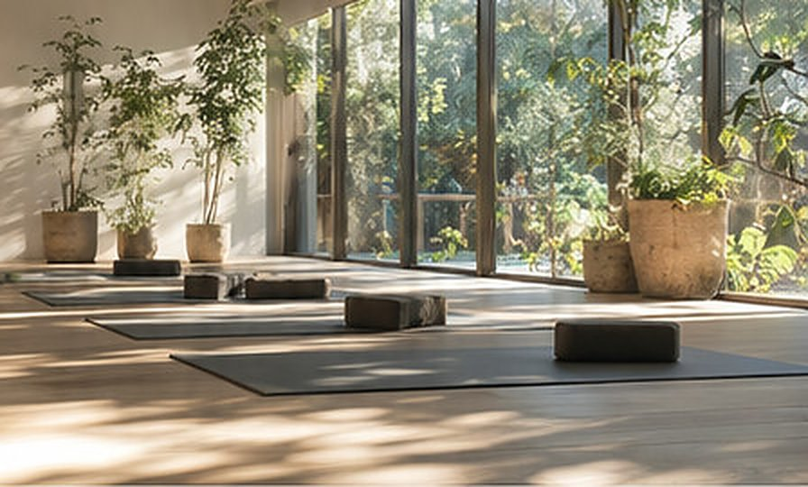
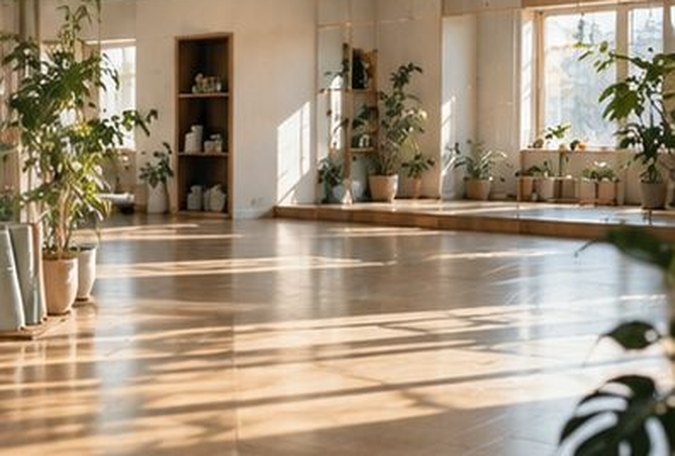

スタジオとアクセス
庭の木が見える、板張りの一部屋です。駅からは歩いて五分。道順と、館内の設備をご案内します。
部屋のこと
大きな窓から、庭の木が見える部屋です。一クラスの定員は十二名。となりの人と手がぶつからない広さで、マットを敷いています。

- 床
- 無垢の板張りです。冬は床暖房を入れるので、素足でも冷たくありません。
- 光
- 東と南に窓があり、朝のクラスは照明をつけずに行います。夜は、手もとが見える程度まであかりを落とします。
- 音
- 音楽は、かけないか、ごく小さく。窓を開けられる季節は、庭の音がそのまま聞こえます。
- 広さ
- マット一枚につき、左右に50センチほどの余白をとっています。鏡は、壁の一面だけです。

設備
シャワーはありません。そのかわり、朝と昼のクラスは、汗をかきすぎない強さにしています。
| 設備 | 内容 |
|---|---|
| 更衣室 | 女性用・男性用が一部屋ずつ。姿見、ドライヤー、汗ふきシートを置いています。 |
| ロッカー | 鍵つき、十八人分。通勤かばんとコートが入る大きさです。 |
| お手洗い | 二か所。うち一か所は、車いすのまま入れる広さです。 |
| 貸しマット | 十二枚。クラスごとに拭いて、乾かしてからお出しします。 |
| 道具 | ブロック、ボルスター（長いクッション）、ベルト、毛布。すべて無料でお使いいただけます。 |
| お茶 | 受付の横に、あたたかいお茶と水を用意しています。クラスの前後にどうぞ。 |
| シャワー | ありません。 |
| 駐車場・駐輪場 | 駐車場はありません。自転車は、建物の前に五台まで停められます。 |
入口に3センチほどの段差があります。お手伝いが必要なときは、事前にお電話ください。
アクセス
- 住所
- 東京都○○区○○ 1-2-3
- 最寄り駅
- ○○線 ○○駅 南口から歩いて5分
- 定休日
- 毎月第3月曜日
駅からの道順
南口を出て、まっすぐ
改札は一つです。南口を出たら、正面の駅前通りを進みます。
郵便局の角を右へ
二つ目の角に郵便局があります。そこを右に曲がると、並木道に入ります。
花屋の角を左へ
並木道を2分ほど歩くと、左手に花屋があります。その角を左へ。
右手の、木の引き戸
細い道を30メートルほど。右手に、木の引き戸と小さな丸い看板が見えます。そこが呼吸舎です。
道に迷ったら、お電話ください。朝7:00のクラスは、開始の30分前から入口を開けています。
営業時間
| 曜日 | 営業時間 | クラスの開始時刻 |
|---|---|---|
| 月〜金 | 6:30〜21:30 | 7:00／9:00／12:00／14:00／18:30／20:00 （曜日によって、ない時間があります） |
| 土・日・祝 | 7:30〜18:00 | 9:00／14:00 |
| 第3月曜日 | 定休日 | — |
お電話の受付は、営業時間と同じです。クラス中は出られないことがあります。その場合は、折り返しお電話します。
年末年始のお休みは、12月に入ってから「お知らせ」でご案内します。